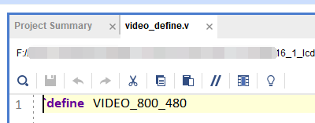
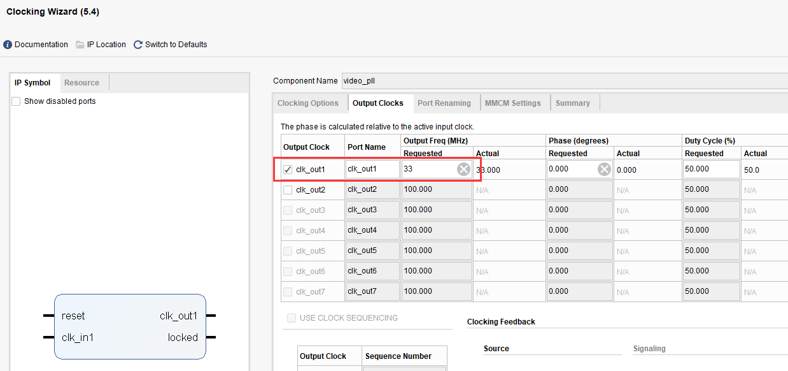

《第十六章》7 寸液晶屏显示实验¶
实验Vivado工程为“lcd7_test”。
基于HDMI输出实验,本章介绍7寸液晶屏的显示。
16.1硬件介绍¶
AN970 LCD触摸屏模块由TFT 液晶屏,电容触摸屏和驱动板组成,详细信息查看AN970用户手册。AN970实物照片如下:

16.2程序设计¶
本章实验其实很简单,与HDMI显示最大的不同是不需要i2c配置,输出按照RGB即可。以下是文件结构。

同时因为液晶屏的分辨率是800x480,需要修改video_define.v的宏定义。
同时将PLL的输出时钟频率修改为33MHz,即800x480的像素时钟。
同时在top.v中例化了ax_pwm,用于调节液晶屏的亮度,设置为200Hz,30%点空比。

16.3实验现象¶
连接液晶屏到J45扩展口,下载程序,即可看到彩条显示。

同时也准备了字符显示的例程:

字符显示

ZYNQ MPSoC开发平台 FPGA教程 - Alinx官方网站